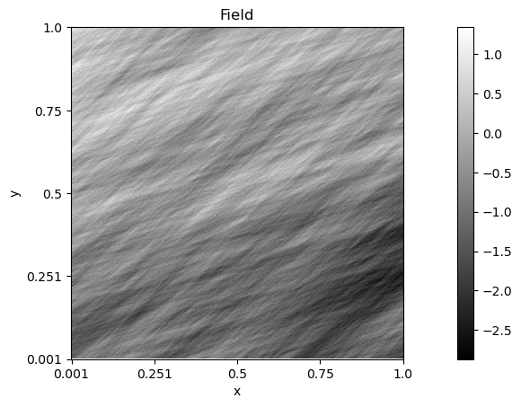

Elementary Fractional Brownian field
Code author: Frédéric Richard <frederic.richard_at_univ-amu.fr>
This example shows how to simulate an elementary fractional Brownian field with prescribed Hurst index, step intervals and directions.
[1]:
import numpy as np
from afbf import tbfield
N = 256 # Image size.
H = 0.2 # Hurst index in (0, 1).
T = np.pi / 8 # Interval bound for selected frequencies.
D = np.pi / 3 # Direction.
# Define the field.
Z = tbfield('efbf')
# Change the parameter of the Hurst and topothesy functions.
Z.hurst.ChangeParameters(fparam=np.array([[H]]))
Z.topo.ChangeParameters(fparam=np.array([0, 1]), finter=np.array([-T, T]))
# Translate the topothesy function to be at the right orientation.
Z.topo.ApplyTransforms(translate=-D)
# Simulate the field.
z = Z.Simulate()
# Display the simulation.
z.Display()
